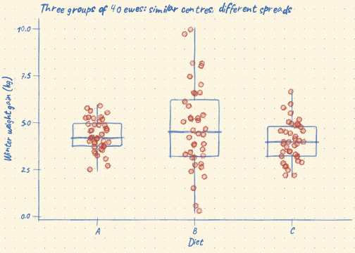
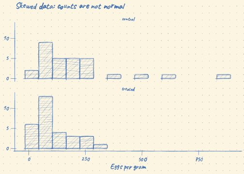

library(ggplot2)
library(plotty) # https://github.com/mkierczak/plotty
# A shared look for the figures in this series: blue pencil on dot-journal paper.
# Blue is the default lead; a second and third pencil for groups. Line types and
# shapes repeat the colour, so the figures also work in greyscale.
plotty_set(style = "pencil", paper = "dots", lead = "#3466b0", seed = 7)
theme_set(theme_plotty())
pal <- c(blue = "#3466b0", red = "#b5473a", green = "#4f7f4a")Statistics from the beginning: comparing two samples
statistics
R
teaching
series
Fourth in a series on statistical tests: the F-test for variances, Student’s and Welch’s t-tests, paired samples, and the Mann–Whitney test when normality fails.
Series · Statistics from the beginning · Part 4
NoteAbout this series
This series is adapted from my 2017 lecture notes, Introduction to Statistical Tests (original PDF). Part 3 introduced the logic of hypothesis testing and the tests for one sample. Here we compare two samples.
Do two samples come from the same population?
The commonest question in applied statistics is a comparison. Do ewes fed on diet A gain as much weight as ewes fed on diet B? Is the expression of a gene different in two tissues? The null hypothesis is that both samples come from populations with the same mean, and we ask whether the observed difference is larger than chance would produce.
Let us simulate two groups of 40 ewes and record their weight gain over the winter, in kilograms. The groups differ in mean and in how variable they are:
set.seed(4)
gain <- data.frame(
diet = rep(c("A", "B", "C"), each = 40),
kg = c(rnorm(40, mean = 4.0, sd = 1.0), # A
rnorm(40, mean = 4.8, sd = 2.5), # B: higher mean, much more variable
rnorm(40, mean = 4.1, sd = 1.1)) # C: like A
)
a <- gain$kg[gain$diet == "A"]
b <- gain$kg[gain$diet == "B"]
c_ <- gain$kg[gain$diet == "C"]ggplot(gain, aes(diet, kg)) +
geom_boxplot_sketchy(width = 0.5, outliers = FALSE) +
geom_jitter_sketchy(width = 0.12, jitter_seed = 1, size = 1.6, colour = pal[["red"]]) +
labs(x = "Diet", y = "Winter weight gain (kg)",
title = "Three groups of 40 ewes: similar centres, different spreads")
Comparing variances: the F-test
Before comparing means, it is useful to know whether the two groups are equally variable. The F-test (named after Snedecor) compares two variances. Its statistic is simply their ratio, and \(H_0\) says that the true ratio is 1:
var.test(a, b) # A vs B
F test to compare two variances
data: a and b
F = 0.13797, num df = 39, denom df = 39, p-value = 9.852e-09
alternative hypothesis: true ratio of variances is not equal to 1
95 percent confidence interval:
0.07297178 0.26086086
sample estimates:
ratio of variances
0.1379691 var.test(a, c_) # A vs C
F test to compare two variances
data: a and c_
F = 0.63931, num df = 39, denom df = 39, p-value = 0.1669
alternative hypothesis: true ratio of variances is not equal to 1
95 percent confidence interval:
0.3381307 1.2087558
sample estimates:
ratio of variances
0.6393101 A and B clearly differ in variance (the ratio is far from 1 and the p-value tiny), while A and C do not. This matches how we generated the data. One caveat: the F-test is itself quite sensitive to departures from normality, so do not take a non-significant result as a guarantee of equal variances.
Comparing means: the t-test
The two-sample \(t\)-test asks whether the means differ. It comes in two flavours, and the difference is exactly the variance question we just asked:
- Student’s t-test pools the two variances into one estimate and so assumes they are equal;
- Welch’s t-test keeps them separate and adjusts the degrees of freedom accordingly. It does not assume equal variances.
In R, t.test() uses Welch’s version by default. Let us compare A with C, whose variances are similar, using both:
t.test(a, c_, var.equal = TRUE) # Student
Two Sample t-test
data: a and c_
t = 1.535, df = 78, p-value = 0.1288
alternative hypothesis: true difference in means is not equal to 0
95 percent confidence interval:
-0.0973272 0.7527875
sample estimates:
mean of x mean of y
4.341112 4.013382 t.test(a, c_) # Welch
Welch Two Sample t-test
data: a and c_
t = 1.535, df = 74.398, p-value = 0.129
alternative hypothesis: true difference in means is not equal to 0
95 percent confidence interval:
-0.09765156 0.75311188
sample estimates:
mean of x mean of y
4.341112 4.013382 The two give almost the same answer, as they should when variances and sample sizes are similar. Now A against B, where the variances are not at all alike:
t.test(a, b)
Welch Two Sample t-test
data: a and b
t = -1.0905, df = 49.561, p-value = 0.2808
alternative hypothesis: true difference in means is not equal to 0
95 percent confidence interval:
-1.1868723 0.3517045
sample estimates:
mean of x mean of y
4.341112 4.758696 The output reports the estimated means of both groups, a confidence interval for their difference, and the p-value. Diet B’s sample mean is about 0.4 kg higher than A’s, yet the test does not call it significant: B is so variable that a gap of this size is easily produced by chance with 40 animals per group. The confidence interval shows this nicely. Read as B relative to A, it runs from about −0.4 kg to +1.2 kg, so it is compatible with both no effect and a useful one. It tells us not only whether the diets differ but by how much, within what range, and that the data are simply too noisy to say.
TipDo we need the F-test at all?
My 2017 notes used the F-test as a gatekeeper: if variances differ, avoid the \(t\)-test. Today the usual advice is simpler. Welch’s test loses very little power when variances happen to be equal, and stays valid when they are not, so you can use it by default and skip the pre-test. Testing assumptions first and then choosing the test based on the outcome also distorts the overall error rates a little.
Paired samples
Sometimes the two measurements are not independent groups but come in pairs: the same animals weighed before and after a treatment, say. Pairing removes the large differences between individuals, and we exploit it with a paired t-test, which is just a one-sample test on the within-pair differences:
set.seed(8)
before <- rnorm(25, mean = 55, sd = 5)
after <- before + rnorm(25, mean = 1, sd = 1.2) # modest, consistent gain
t.test(after, before, paired = TRUE)$p.value # exploits the pairing[1] 0.001099373t.test(after, before)$p.value # ignores it[1] 0.5210423Ignoring the pairing hides the effect behind the large animal-to-animal variation. Whenever the design is paired, say so in the test.
When normality fails: the Mann–Whitney test
If the data are far from normal, and especially if samples are small, the non-parametric alternative is the Wilcoxon rank-sum test, also known as the Mann–Whitney U test. R implements both as wilcox.test(). It pools all observations, ranks them, and asks whether one group’s ranks tend to be higher than the other’s.
Consider parasite egg counts in two treatment groups, which are typically strongly right-skewed:
set.seed(21)
eggs <- data.frame(
treatment = rep(c("control", "treated"), each = 30),
count = c(rlnorm(30, meanlog = 5.0, sdlog = 0.8),
rlnorm(30, meanlog = 4.1, sdlog = 0.8))
)
ggplot(eggs, aes(count)) +
geom_histogram_sketchy(bins = 15) +
facet_wrap(~ treatment, ncol = 1) +
labs(x = "Eggs per gram", y = NULL, title = "Skewed data: counts are not normal")
shapiro.test(eggs$count[eggs$treatment == "control"])$p.value[1] 2.546688e-05wilcox.test(count ~ treatment, data = eggs)
Wilcoxon rank sum exact test
data: count by treatment
W = 625, p-value = 0.009181
alternative hypothesis: true location shift is not equal to 0The rank-based test needs no normality and works with the skewed counts directly. Read its result like the others: a small p-value means that values in one group tend to be larger. Strictly speaking, the test compares the distributions. It is a comparison of medians or means only if the two distributions have the same shape.
A short guide
| Situation | Test |
|---|---|
| two independent samples, roughly normal | Welch’s t-test (t.test) |
| two independent samples, same variance assumed | Student’s t-test (var.equal = TRUE) |
| same units measured twice | paired t-test (paired = TRUE) |
| non-normal data or small samples | Wilcoxon rank-sum (wilcox.test) |
| non-normal, paired | Wilcoxon signed-rank (wilcox.test(paired = TRUE)) |
| compare variances | F-test (var.test) |
What’s next
Two groups are easy. With three or more, running all the pairwise tests brings in a problem of its own. In the next part we deal with more than two samples: why multiple comparisons inflate errors, and how ANOVA and the Kruskal–Wallis test handle them.
Previous: hypotheses, normality and one-sample tests. Next in the series: more than two samples.